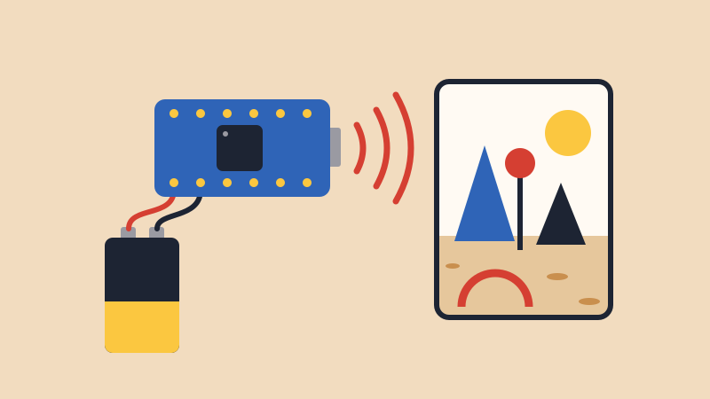
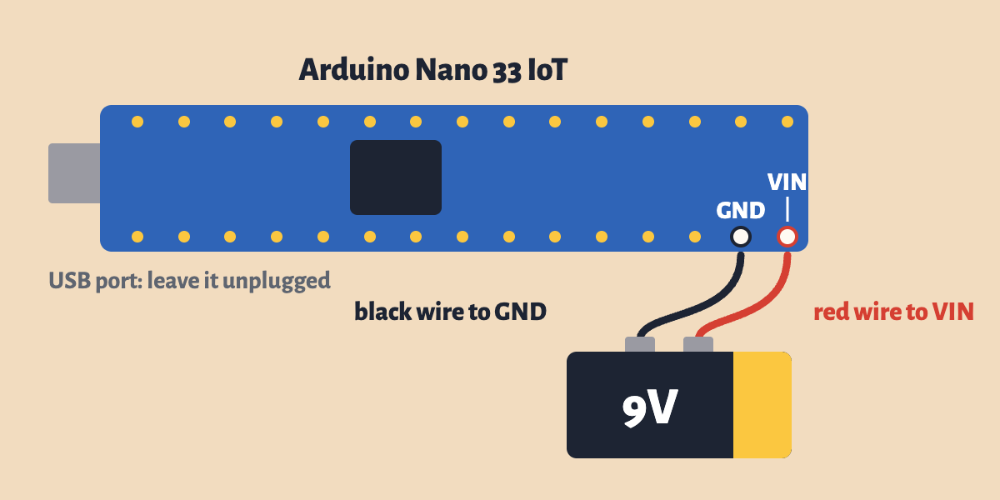

So far, your Arduino has been tied to your laptop by a USB cable. Let’s cut that cord. A 9V battery powers the board, and its built-in accelerometer sends how it’s tilted over Wi-Fi to a laptop. Tilt the board and you move through a VR world.
Try the world with your mouse. It runs in your browser, with no Arduino needed.
Your final project doesn’t have to sit next to a laptop. What could you build if your Arduino could go anywhere: inside a ball, on your body or across the room?
You still need the USB cable for this step. You already installed the WiFiNINA library for the Class Sensor Grid. Also install Arduino_LSM6DS3 from the Library Manager.
ROUTER_NAME and
ROUTER_PASSWORD to the Wi-Fi name and password on
the board. Keep the quotes.Joined when it’s on the Wi-Fi./*
Tilt World (ART 150, Cut the Cord lesson)
Reads the Nano 33 IoT's built-in accelerometer and sends it over Wi-Fi to
the laptop running relay.py --tilt, where tilting the board moves you
through a VR world.
Upload this once over USB. Then unplug the USB cable and power the board
from a 9V battery: red wire to VIN, black wire to GND. The sketch stays in
the board's memory and starts by itself whenever it gets power.
With no computer attached, the built-in LED tells you what's happening:
- flashing: joining the Wi-Fi
- on: connected and sending
- fast: the accelerometer didn't start
The only lines to change are the Wi-Fi name and password just below.
How it works: about 30 times a second, the board sends a line like
"V3F9A21,-120,30,980" over UDP. That's this board's ID (the last six
characters of its hardware address), then x, y and z in thousandths of a g.
The laptop's relay.py announces itself on the network once a second. The
board sends straight to it once it hears that, and to the whole network
until then.
*/
#include <SPI.h>
#include <WiFiNINA.h>
#include <WiFiUdp.h>
#include <Arduino_LSM6DS3.h>
// ---- change these two lines to the classroom router's 2.4 GHz network ----
const char WIFI_NAME[] = "ROUTER_NAME";
const char WIFI_PASSWORD[] = "ROUTER_PASSWORD";
const unsigned int UDP_PORT = 9000; // relay.py listens here
const unsigned int BEACON_PORT = 9001; // relay.py announces itself here
const unsigned long SEND_EVERY = 33; // ms: about 30 messages a second
WiFiUDP udp;
char boardId[7]; // e.g. "3F9A21"
IPAddress sendTo; // the whole network, until we hear the relay
bool wifiReady = false;
unsigned long lastWifiTry = 0;
unsigned long lastSend = 0;
void setup() {
// Serial is fine on a battery, but never add "while (!Serial);" here:
// with no computer attached, the sketch would wait forever.
Serial.begin(115200);
pinMode(LED_BUILTIN, OUTPUT);
if (!IMU.begin()) {
Serial.println("The accelerometer didn't start");
while (true) {
digitalWrite(LED_BUILTIN, millis() / 80 % 2);
}
}
// the MAC address comes back last byte first: mac[0] is the end of it
byte mac[6];
WiFi.macAddress(mac);
snprintf(boardId, sizeof(boardId), "%02X%02X%02X", mac[2], mac[1], mac[0]);
Serial.print("Board ID: ");
Serial.println(boardId);
joinWifi();
}
// Even when WiFi.begin() reports a failure, the Wi-Fi chip keeps trying on
// its own, and on a weak signal that can take 20+ seconds. Calling begin()
// again restarts that attempt, so we leave it 30 seconds between tries.
void joinWifi() {
lastWifiTry = millis();
Serial.print("Joining ");
Serial.println(WIFI_NAME);
WiFi.begin(WIFI_NAME, WIFI_PASSWORD);
}
// Once on the network, work out where to send and open the socket.
void startSending() {
// send to the whole network (e.g. 192.168.1.255) until the relay is found
IPAddress ip = WiFi.localIP();
IPAddress mask = WiFi.subnetMask();
for (int i = 0; i < 4; i++) {
sendTo[i] = ip[i] | (~mask[i] & 0xFF);
}
WiFi.noLowPowerMode(); // keep the radio awake: steadier, faster sends
udp.begin(BEACON_PORT); // listen for the relay; we send to UDP_PORT
wifiReady = true;
Serial.print("Joined, address ");
Serial.println(ip);
}
void loop() {
if (WiFi.status() != WL_CONNECTED) {
wifiReady = false;
digitalWrite(LED_BUILTIN, millis() / 250 % 2); // flash while joining
if (millis() - lastWifiTry > 30000) {
joinWifi();
}
return;
}
digitalWrite(LED_BUILTIN, HIGH);
if (!wifiReady) {
startSending();
}
// the relay sends "RELAY" once a second: from then on, send straight to it
while (udp.parsePacket() > 0) {
char buf[8] = { 0 };
udp.read(buf, sizeof(buf) - 1);
if (strncmp(buf, "RELAY", 5) == 0) {
sendTo = udp.remoteIP();
}
}
if (millis() - lastSend >= SEND_EVERY && IMU.accelerationAvailable()) {
float x, y, z;
IMU.readAcceleration(x, y, z);
// whole numbers, because snprintf can't print decimals on this board
char line[32];
int len = snprintf(line, sizeof(line), "V%s,%d,%d,%d", boardId,
(int)(x * 1000), (int)(y * 1000), (int)(z * 1000));
udp.beginPacket(sendTo, UDP_PORT);
udp.write((const uint8_t *)line, len);
udp.endPacket();
lastSend = millis();
}
}The sketch stays in the board’s memory, so from now on it starts by itself whenever the board gets power. It doesn’t need your laptop anymore.

With the USB cable unplugged and the battery not yet snapped on:
Then check both wires, and snap on the battery. Tape the battery to the breadboard, so the whole thing is one object you can hold.
Warning9V only goes to VIN. Every other pin takes 3.3V at most, so 9V on 3.3V, VUSB or any other pin can destroy the board. Swapping red and black can too, so check them before you snap on the battery. If a servo’s red wire is on Vin from the Sweep lesson, take it off first: Vin is now 9V instead of the USB’s 5V.
Why VIN? The board has a regulator that turns the voltage on VIN into the 3.3V it runs on, and 9V is well inside the range it accepts.
The built-in LED now tells you what’s happening, since there’s no Serial Monitor:
Taking care of the battery. A 9V battery is small and Wi-Fi uses a lot of power, so expect it to last hours, not days. Unsnap it when you’re not using it, and always unsnap it before you plug the USB cable back in to upload.
In class, the world runs on my laptop and one board drives it at a time.
To run it on your own laptop, join the same Wi-Fi network and download these three files into one folder: relay.py, tilt_world.html and aframe-v1.8.0.min.js. In that folder, run this in the Terminal, and the page opens in your browser:
python3 relay.py --tiltHold the board flat with the USB port pointing away from you. The corner of the page shows your board ID and how many messages a second are arriving.
The small board on screen tilts along with the real one. These keys help:
The icon in the bottom corner makes it full screen. The world is built with A-Frame, a tool for making VR on the web, and it runs here on a screen. A headset can only enter VR from a secure (https) page, which this local page isn’t.
V3F9A21,-120,30,980: its ID, then x, y and z in
thousandths of a g. relay.py on the laptop receives
these and passes them to the page.relay.py is running. If your Mac asks
whether Python can accept incoming connections, click
Allow.